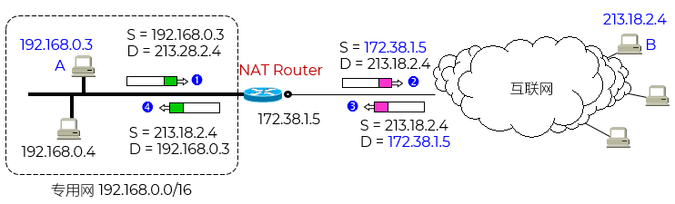
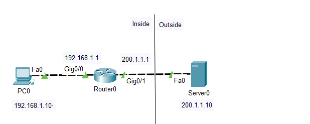
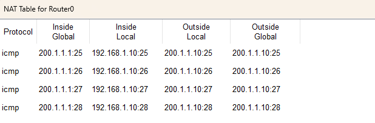
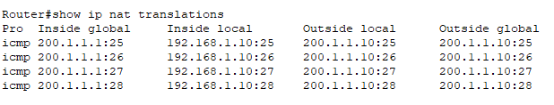

NAT - Network Address Translation
- 目标 Objective
- 解释NAT的基本概念与作用
- 区分不同类型的NAT（静态、动态、PAT）
- 理解NAT在现代网络中的应用场景（如家庭路由器、企业边界）
- 认识NAT与VPN等技术的关系及潜在问题
- 关注 Focus
- 用少量公网IP支持大量内网设备通信
- VPN的安全远程访问 - 地址复用与隐藏
- 一个家庭有5台设备，但ISP只分配1个公网IP → 如何上网？
- 核心 Core
- 地址转换：将私有IP（如192.168.x.x）替换为公网IP
- 端口跟踪（对PAT而言）：记录内网主机使用的源端口，用于回包匹配
- 优点 Merits
- 一定程度上缓解IPv4地址短缺
- 隐藏内网结构，提升安全性
- 简化网络迁移 - 内网IP可随意变更
- 部署 Implementation
- 需要在专用网连接到互联网的路由器上安装 NAT 软件
- 装有 NAT 软件的路由器叫做 NAT路由器，它至少有一个有效的外部全球 IP 地址
- 所有使用本地地址的主机在和外界通信时，都要在 NAT 路由器上将其本地地址转换成全球 IP 地址，才能和互联网连接
- 转换过程 Translation
- NAT 路由器维护一个IP地址转换表
- 当 NAT 路由器具有 n 个全球 IP 地址时，专用网内最多可以同时有 n 台主机接入到互联网
NAT路由转换表
| 专网IP地址 |
公网IP地址 |
| 192.168.0.3 |
172.38.1.5 |
| ... |
... |
- 离开专用网时：替换源地址，将内部地址替换为公网/全球地址
- 进入专用网时：替换目的地址，将公网/全球地址替换为内部地址
- 可以使专用网内较多数量的主机轮流使用 NAT 路由器有限数量的全球 IP 地址
- 通过 NAT 路由器的通信必须由专用网内的主机发起，因此，专用网内部的主机不能充当服务器用
- 多个主机共用的情况下，通过不同的端口号进行区分/可以被正确路由回来
端口号转换 NAPT (Network Address and Port Translation)
- NAT 路由器不会永久保存转换记录。为了节省内存和提高安全性，它会为每种协议设置一个 老化时间（Timeout）
ICMP：30-60s
TCP：1h
UDP：30s
DNS：5-10s

NAT转换过程
实操 Drill
- 搭建拓扑 点击下载PT文件
端设备 End Device - PC
网络设备 Network Devices - router 2911
端设备 End Devices - server

拓扑
- 配置IP地址 - 略
主机
服务器
路由器
- 配置NAT
Router(config)#access-list 1 permit 192.168.1.0 0.0.0.255
Router(config)#
Router(config)#ip nat inside source list 1 interface g0/1 overload
Router(config)#
Router(config)#interface g0/0
Router(config-if)#ip nat inside
Router(config-if)#
Router(config-if)#inter g0/1
Router(config-if)#ip nat outside
- PC0 上 ping Server0
- 使用监视器查看路由器的NAT转换表 - 动作要快

NAT转换表
- 或者在ping的过程使用CLI查看NAT转换表 - 动作要快

NAT转换表
因为外部服务器Server没有做NAT。所以它的外部和内部地址都是200.1.1.10
- Reading
- Network Address
Translation (NAT)